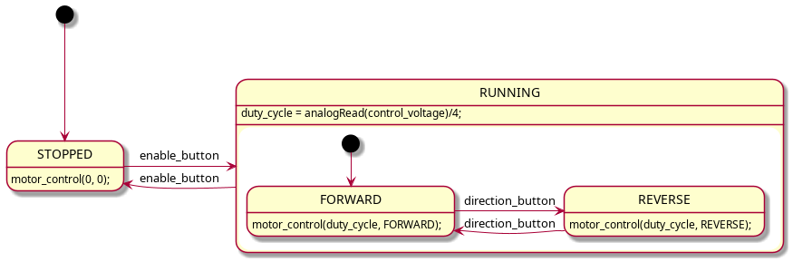

Note
03/03/2020 - 75mins
Aim:
DC drive, H-bridge
Servo drive
Materials:
Arduino Board
Button
Cables
Breadboard
Potentiometer
Resistors
Servo
DC
Code:
Ex: Faster/Slower motor drive controlled with Potentiometer
Motor Drive¶
In general a motor drive is a power electronic device used to control the power delivered to a motor. The purpose could be either torque, speed or position control of the rotating motor shaft.
There are many different types of motors in existence, and each type warrants its own particular motor drive design.
DC Motors: This is a very common motor in cheap low power applications. We can see it in remote control cars, robots, etc. This motor has a simple structure. It will start rolling by applying proper voltage to its terminals and change it’s rotational direction by switching voltage polarity. The DC motor torque (and thus speed) is directly controlled by the applied current. Current depends on voltage, and thus a voltage level less than the maximum tolerable voltage, will cause a speed that is less than maximum speed.
Stepper Motors: In some projects such as 3D printers, scanners and CNC machines we need to know motor spin steps accurately. In these cases, we may use stepper motors. Stepper motor are electric motors that divides a full rotation into a number of equal steps. The amount of rotation per step is determined by the motor structure. These kind of motors may be desiged to have a very high accuracy.
Servo Motors: There are many different types of motors that could be considered as seveo motors. The position control service. By using a servo you will be able to control the amount of shafts rotation and move it to a specific position. They usually have a small dimension and are the best choice for robotic arms.
AC motors Three phase AC motors are the larges consumer of electical energy in the world. This type of motor is typically used in applications where accuracy is less important. Examples include the driving of pumps, fans, drums, batching plants etc.
It is typically not possible to connect these motors to microcontrollers or controller board such as Arduino directly. Unless the motor is really small it will require more current than the controller is able to supply. We need some form of circuit to amplify the control signal from the controller, this kind of circuit is called amotor driver. The driver is an interface circuit between the motor and controlling unit to facilitate driving. Drives come in many different types [].
In this lecture we will look at DC-motor drives. The understanding of DC-motor drives is a good foundation for understanding more advanced AC-motor drives.
The theory beind the DC-Motor¶
DC motors are divided into 2 main categories: brushed and brushless DC motors. We can define a brushed DC motor as a motor with internal mechanical commutation. It is designed to be powered by a direct current source. On the other hand, in the brushless DC motors, there is no physical contact between coils and the field magnet (stationary and rotaty parts). The brushless DC motor is really a AC motor with a electronic DC to AC converter built in.
A brushless DC motor uses a permanent magnet as its external rotor and there are three phases of coils surrounding it. A specialized sensor is also placed in the setup to track the position of the rotor and as it is being tracked, the reference signals are being sent to a controller. It is driven by an ESC (electronic speed control). ESC regulates the speed and also provides dynamic braking. They are mostly used in fast-speed required applications like in drones since they have less corrision compared to brushed DC motors. Nevertheless, day by day their fields of usages are increasind.

A brushed motor, on the other hand, has a configuration of wound wire coils, carrying out the duties of a two-pole electromagnet. The direction of the current is controlled by the commutator and this ensures the flow through the armature.
Brushed DC motors have been in commercial use since 1886. Brushless motors, on the other hand, did not become commercially viable until 1962. Brushed DC motors develop a maximum torque when stationary, linearly decreasing as velocity increases. Some limitations of brushed motors can be overcome by brushless motors; they include higher efficiency and a lower susceptibility to mechanical wear. These benefits come at the cost of potentially less rugged, more complex, and more expensive control electronics [].
Brushed DC motors on the other hand, is more widely used in the industry today. One should understand the working principle of a brushed DC motor before to go with brushless one.
DC-motor drive¶
We can divide controlling a DC motor concept in 2 chapters: Speed control and direction control.
Motor Speed Adjusting by PWM¶
The most common way to vary the voltage level (and the frequency) in modern motor drives is by using pulse width modulation. A thorough understanding of this concept is essential for anyone designing such drives.
Note
As this course is a basic course we will not have time to go into all the details of how the PWM operates.
The Atmega 328 supports two major types of PWM:
Fast PWM
Phase correct PWM
Fast PWM mode¶
The frequency of the fast PWM mode is given by:
Where clock_speed is the speed of the Arduino CPU clock (16 MHz by default). The prescaler is a number that is scaling the clock, and top_value is the maximum value of the counter.
Phase correct PWM¶
The phase correct PWM is a mode where the phase of the PWM signal remains constant. This is important in some applications, such as AC motor drives.
Available outputs¶
The outputs that support PWM are labeled with a small sine wave symbol (actually a tilde “~”). The following table lists some important information regarding the PWM outputs. The switching frequency is only the default value, and may be changed by direct register manipulation.
Pin number |
Timer |
Switching frequency |
3 |
2 |
490 Hz |
5 |
0 |
980 Hz |
6 |
0 |
980 Hz |
9 |
1 |
490 Hz |
10 |
1 |
490 Hz |
11 |
2 |
490 Hz |
A brushed DC-motor has a torque proportional to the current passing through the armature of the motor [].
Where \(k_T\) is the torque constant for the motor, and \(I_a\) is the armature current.
Control loop¶
If we simply apply a voltage to the motor without making any measurements to determine the optimal voltage magnitude for a given performance criteria, this is referred to as open loop control.
By measuring the armature current, the speed, or the position of the rotor shaft, it is possible to implement closed loop control. Closed loop control requires additional sensors, thus in this lecture, we will only consider open loop control.
Four quadrant operation¶
The rotating shaft of an electric machine has two fundamental parameters, torque and speed. The speed may be forward or reverse, and the torque may be motoring or braking. Thus we have four possible modes of operation, i.e. four quadrant operation.

For a brushed DC-motor it is possible to operate in all four quadrants by controlling the voltage applied to the armature. The motor drive must have the ability to control both the magnitude, and polarity of the voltage, and the circuit must allow the current to flow in both directions.
When the drive is operating in a mode with negative torque with respect to the rotating direction it is said to be in breaking (generator) mode. In this mode the energy is flowing from the motor back to the power source.
See also
How a brushed DC works: BDC principle
How a brushless DC works: BLDC principle
Practical demonstration of the four quadrant operation: four quadrant
Speed-Torque relation in efficiency: Motor efficiency map of a DC motor
Motor Direction Setting by Switching¶
The most efficient way to control the voltage level to the motor is by using some form of on/off modulation, commonly we use pulse width modulation. The digital outputs of the arduino has a maximum current output of 40mA. This current is far below what is required for most motor applications, and thus we need amplification.
The digital outputs may be used to drive transistors that are able to support the higher currents required for the motor. Because this is such a common use for transistors, it is possible to buy integrated circuits where several transistors are connected in a configuration for motor drive.
H-Brigde¶
An H bridge is an electronic circuit that switches the polarity of a voltage applied to a load. These circuits are often used in robotics and other applications to allow DC motors to run forwards or backwards [].

The L293D is a quadruple high-current half-H driver. The D in the name signifies that this version incorporates diodes on the outputs. It has a maximum output current of 600 mA, and supports a voltage range from 4.5 to 36 V.

Depening on the degree of control that your application requires there are several possible ways to connect the motor.
More details about the driver is available in the datasheet
Simple motor drive example using single transistor¶
In this example we will be using a IFR520N transistor to drive the small DC-motor that comes as part of the Arduino starter kit. The IRF520N datasheet provides the required details on the electrical limitations of the transistor, but for our purposes you should only know that it will operate within limits.
The function analogWrite() will be used to generate a PWM signal to the transistor, and the switching frequency will stay at it’s default value.

#include <Arduino.h>
const uint8_t pwm_pin = 9;
const uint8_t on_off_button = 12;
uint8_t old_button_state = 0;
uint8_t motor_enable = 0;
void setup() {
pinMode(pwm_pin, OUTPUT);
pinMode(on_off_button, INPUT);
Serial.begin(9600);
}
void loop() {
uint8_t button_state = digitalRead(on_off_button);
if(button_state != old_button_state){
old_button_state = button_state;
// TODO: This code requires debouncing of the push button.
if(button_state == 1){
if(motor_enable == 1){
Serial.println("Motor disabled.");
analogWrite(pwm_pin, 0);
motor_enable = 0;
}
else {
Serial.println("Motor enabled.");
analogWrite(pwm_pin, 100);
motor_enable = 1;
}
}
}
}
Motor drive using the L293D¶
In order to fully control a motor using the L293D you need three digital signals. Two signals to IN1, and IN2 for selection of the rotation direction, and one PWM signal to ENABLE1 for speed control.
In the following example we have one potentiometer to control the speed of the motor and one push button to toggle the direction.
/* Arduino DC Motor Control - PWM | H-Bridge | L298N - Example 01
by Dejan Nedelkovski, www.HowToMechatronics.com
*/
#define enA 9
#define in1 6
#define in2 7
#define button 4
int rotDirection = 0;
int pressed = false;
void setup() {
pinMode(enA, OUTPUT);
pinMode(in1, OUTPUT);
pinMode(in2, OUTPUT);
pinMode(button, INPUT);
// Set initial rotation direction
digitalWrite(in1, LOW);
digitalWrite(in2, HIGH);
}
void loop() {
int potValue = analogRead(A0); // Read potentiometer value
int pwmOutput = map(potValue, 0, 1023, 0 , 255); // Map the potentiometer value from 0 to 255
analogWrite(enA, pwmOutput); // Send PWM signal to L298N Enable pin
// Read button - Debounce
if (digitalRead(button) == true) {
pressed = !pressed;
}
while (digitalRead(button) == true);
delay(20);
// If button is pressed - change rotation direction
if (pressed == true & rotDirection == 0) {
digitalWrite(in1, HIGH);
digitalWrite(in2, LOW);
rotDirection = 1;
delay(20);
}
// If button is pressed - change rotation direction
if (pressed == false & rotDirection == 1) {
digitalWrite(in1, LOW);
digitalWrite(in2, HIGH);
rotDirection = 0;
delay(20);
}
}
Motor drive example using the L293D¶
The follwing example is a implementation of motor control using the L293D driver. The implementation uses one push button for starting, and one for stoping the motor. The voltage on analog input A0 is used to control the duty cycle of the puse width modulation.

#include <Arduino.h>
const uint8_t enable = 10;
const uint8_t input_1 = 9;
const uint8_t input_2 = 8;
const uint8_t start_button = 13;
const uint8_t stopp_button = 12;
const uint8_t control_voltage = A0;
uint8_t start_button_event();
uint8_t stopp_button_event();
typedef enum {
FORWARD,
REVERSE,
STOPPED
} rot_direction_t;
void motor_control(uint8_t duty_cycle, rot_direction_t direction);
void setup() {
pinMode(enable, OUTPUT);
pinMode(input_1, OUTPUT);
pinMode(input_2, OUTPUT);
Serial.begin(9600);
}
void loop() {
static uint8_t motor_state = 0;
static uint32_t old_millis = 0;
static uint32_t serial_old_millis = 0;
uint16_t adc_value = 0;
static uint8_t duty_cycle = 0;
if(millis() > old_millis + 50){
adc_value = analogRead(control_voltage);
duty_cycle = adc_value / 4;
old_millis = millis();
}
if(millis() > serial_old_millis + 1000){
Serial.print("Duty cycle: ");
Serial.println(duty_cycle);
serial_old_millis = millis();
}
if(motor_state == 0){
motor_control(0, STOPPED);
if(start_button_event()){
motor_state = 1;
}
}
else if(motor_state == 1){
motor_control(duty_cycle, FORWARD);
if(stopp_button_event()){
motor_state = 0;
}
}
}
void motor_control(uint8_t duty_cycle, rot_direction_t direction){
if(direction == FORWARD){
digitalWrite(input_1, HIGH);
digitalWrite(input_2, LOW);
}
else if(direction == REVERSE){
digitalWrite(input_1, LOW);
digitalWrite(input_2, HIGH);
}
else if(direction == STOPPED){
digitalWrite(input_1, LOW);
digitalWrite(input_2, LOW);
}
analogWrite(enable, duty_cycle);
//digitalWrite(enable, HIGH);
}
uint8_t start_button_event(){
static uint16_t shift_register = 0;
static uint32_t old_millis = 0;
if(millis() > old_millis + 5){
old_millis = millis();
uint8_t input_state = digitalRead(start_button);
shift_register = (shift_register << 1) | input_state | 0xC000;
if(shift_register == 0xE000){
Serial.print("Start event detected.");
return 1;
}
}
return 0;
}
uint8_t stopp_button_event(){
static uint16_t shift_register = 0;
static uint32_t old_millis = 0;
if(millis() > old_millis + 5){
old_millis = millis();
uint8_t input_state = digitalRead(stopp_button);
shift_register = (shift_register << 1) | input_state | 0xC000;
if(shift_register == 0xE000){
Serial.print("Stop event detected.");
return 1;
}
}
return 0;
}
Advanced motor drive example¶
In the following example a potentiometer is used to control the voltage level (i.e. speed) of the motor, one push button changes rotation direction, and the other turns the drive on and off. The main idea is pretty much the same as the first program. The code is a bit more sophisticated and safer to use. The control software is built around a hierarchical State Machine, that simplifyes the management of the different states in which the motor drive may be operating. Put attention of the usage of typedef.
The following state diagram depicts the operation of the software:

The following source code listing is the complete software for the motor drive:
Show/Hide Code
#include <Arduino.h>
const uint8_t enable1 = 6;
const uint8_t input1 = 5;
const uint8_t input2 = 4;
const uint8_t enable_button = 12;
const uint8_t direction_button = 11;
const uint8_t control_voltage = A0;
//#define DEBUG
typedef enum {
FORWARD,
REVERSE
} direction_t;
typedef enum {
RUNNING,
STOPPED
} motor_state_t;
void motor_control(uint8_t duty_cycle, direction_t direction);
int buttonPressed_debounce(uint8_t digital_input, uint8_t debounce_delay);
void setup(){
pinMode(enable1, OUTPUT);
pinMode(input1, OUTPUT);
pinMode(input2, OUTPUT);
pinMode(enable_button, INPUT);
pinMode(direction_button, INPUT);
Serial.begin(9600);
}
void loop(){
motor_state_t motor_state = STOPPED;
direction_t motor_direction = FORWARD;
uint8_t duty_cycle = 0;
for(;;){
duty_cycle = analogRead(control_voltage)/4;
#ifdef DEBUG
Serial.print("Duty cycle: ");
Serial.print(duty_cycle);
Serial.print("\n");
delay(1000);
#endif
/*
* State machine for motor control.
*/
switch (motor_state)
{
case RUNNING:
if(buttonPressed_debounce(enable_button, 50)){
motor_state = STOPPED;
Serial.println("Motor stopped.");
}
switch (motor_direction)
{
case FORWARD:
if(buttonPressed_debounce(direction_button, 50)){
motor_direction = REVERSE;
Serial.println("Motor direction reversed.");
}
motor_control(duty_cycle, FORWARD);
break;
case REVERSE:
if(buttonPressed_debounce(direction_button, 50)){
motor_direction = FORWARD;
Serial.println("Motor direction forward.");
}
motor_control(duty_cycle, REVERSE);
break;
default:
motor_state = STOPPED;
break;
}
break;
case STOPPED:
if(buttonPressed_debounce(enable_button, 50)){
motor_state = RUNNING;
Serial.println("Motor enabled.");
}
motor_control(0, REVERSE);
break;
default:
motor_state = STOPPED;
break;
}
}
}
void motor_control(uint8_t duty_cycle, direction_t direction){
if(direction == FORWARD){
digitalWrite(input1, HIGH);
digitalWrite(input2, LOW);
}
else {
digitalWrite(input1, LOW);
digitalWrite(input2, HIGH);
}
analogWrite(enable1, duty_cycle);
}
/*
* Check if button is pressed, i.e. if it is high, and it was low before.
* This version includes a debounce timer.
*
* The debounce time is stored as an array of 16 32-bit integers, thus it is
* not very memory efficient.
*/
int buttonPressed_debounce(uint8_t digital_input, uint8_t debounce_delay) {
static uint16_t lastStates = 0; // Store the states of digital input 0 - 15.
static uint32_t lastEdgeDetect[16] = {0}; // Store the time of the last rising edge.
uint8_t state = digitalRead(digital_input);
// Check if the state of the digital input has changed.
if (state != ((lastStates >> digital_input) & 1)) {
lastEdgeDetect[digital_input] = millis();
}
if((millis() - lastEdgeDetect[digital_input]) > debounce_delay){
lastStates ^= 1 << digital_input; // Store the current state of the digital input.
return state == HIGH;
}
return false;
}
Motor drive assignment¶
The following circuit is the one used in assignment 5.

The following state diagram depicts the intended operation of the motor drive in the assignment:
![STATE NORMAL {
[*] --> STOPPED
STOPPED -> ACCELERATING : start_stop_button
ACCELERATING -> RUNNING : setpoint_reached
ACCELERATING -> BREAKING : start_stop_button
RUNNING -> BREAKING : start_stop_button
BREAKING -> STOPPED : zero_reached
BREAKING -> ACCELERATING : start_stop_button
STOPPED: motor_control(0, 0);
}
[*] --> NORMAL
NORMAL -> EMERGENCY_STOP : emergency_stop_button
EMERGENCY_STOP -> NORMAL : start_stop_button
EMERGENCY_STOP : motor_control(0, 0);](../../_images/plantuml-7175e7244f98a053b04ad49bb2fbc27a3bfc0604.png)
Servo Motor Drive¶
There is no principal difference between a servo motor and any other kind of motor. The difference lies in how one intends to use it. A servo motor is intended for precise control of angular or linear position, and thus it typically employs a position sensor on the shaft. Traditionally brushed DC-motors have been the preferred choice for servo motors, due to the ease of control. Today however there are many different classes of motors that are used for servo application.
The Arduino starter kit contains a special servo motor SM-S2309S which has some features that are quite usefull for many servo applications. It has a built in gearbox that reduces the speed and increases the torque on the shaft, and a built in position sensor, wich allows us to simply request a potion, and the motor will move to that position.
The following video gives a good explanation to the internal operation of this kind of servo motor.
Switching frequency¶
The analogWrite() function in the standard Arduino library only support one parameter, specifying the duty cycle of the generated PWM output. Another important parameter of PWM however is the frequency at wich the pulses are turned on and off. The Arduino library does not support changing this frequency, but it is possible to change it by accessing the registers of the timers responsible for generating the PWM.
Warning
Changing the registers may impact the operation of other features of the Arduino library, such as the millis() function.
The various hardware timers in the microcontroller are responsible for various groups of PWM outputs. Thus by manipulating a given hardware timer, you will be manipulating the frequency of some of the PWM outputs.
pinMode(3, OUTPUT);
pinMode(11, OUTPUT);
TCCR2A = _BV(COM2A1) | _BV(COM2B1) | _BV(WGM21) | _BV(WGM20);
TCCR2B = _BV(CS22);
OCR2A = 180;
OCR2B = 50;
Servo motor library¶
Servo motors typically requires 20ms period of PWM signals (50Hz) with pulse width varying between 1ms-2ms (0-180 degrees) as a driving signal. Since the generic analogWrite() works in 490Hz/ 980Hz, you cannot drive a servo motor unless you fiddle around the timer settings. Luckily, Arduino comes with a servo library that simplifies the control of the servo motor.
The following example shows how you may send commands on the serial UART to control the servo position. Given 5 different values via serial port, control the servo angle.
#include <Servo.h>
Servo myservo; // create servo object to control a servo
int incomingByte = 0; // for incoming serial data
int val; // variable to read the value from the serial port
int mappedVal;
void setup() {
myservo.attach(9); // attaches the servo on pin 9 to the servo object
Serial.begin(9600); // opens serial port, sets data rate to 9600 bps
}
void loop() {
if (Serial.available() > 0) {
val = Serial.read() - 48; // reads the value from the serial port. (-48 is for ascii conversion)
mappedVal = map(val, 0, 5, 0, 180); // scale it to use it with the servo (value between 0 and 180)
Serial.print("I received: ");
Serial.println(mappedVal);
myservo.write(mappedVal); // sets the servo position according to the scaled value
delay(15); // waits for the servo to get there
}
}
/*
////////////////////////////////////////////////////
// COMPARISON WITH analogWrite() //
////////////////////////////////////////////////////
int incomingByte = 0; // for incoming serial data
int val; // variable to read the value from the serial port
int mappedVal;
const int myservo_pin = 9;
void setup() {
Serial.begin(9600); // opens serial port, sets data rate to 9600 bps
pinMode(myservo_pin, OUTPUT);
}
void loop() {
if (Serial.available() > 0) {
val = Serial.read() - 48; // reads the value from the serial port. (-48 is for ascii conversion)
mappedVal = map(val, 0, 5, 0, 180); // scale it to use it with the servo (value between 0 and 180)
Serial.print("I received: ");
Serial.println(mappedVal);
//myservo.write(mappedVal); // sets the servo position according to the scaled value
analogWrite(myservo_pin, mappedVal);
delay(15); // waits for the servo to get there
}
}
*/
We talked about that we drive servo motors using PWM signal but also we didn’t use the regular analogWrite() function. It wouldn’t work. Let’s see the difference of the signal types between analogWrite() and myservo.write() using a logic analyzer.
Logic Analyzer result for analogWrite() function¶
Logic Analyzer result for myservo.write() function¶
Servo motor drive example¶
The following example uses a push button to toggle through various positions on the servo motor.
#include <Arduino.h>
#include <Servo.h>
const uint8_t toggle_button_pin = 12;
Servo robot_arm;
uint8_t toggle_button_event();
void setup() {
pinMode(toggle_button_pin, INPUT);
robot_arm.attach(3);
Serial.begin(9600);
}
void loop() {
static uint8_t motor_pos = 0;
if(toggle_button_event()){
motor_pos += 10;
Serial.println("+10 grader.");
Serial.println(motor_pos);
if(motor_pos > 180){
motor_pos = 0;
}
}
robot_arm.write(motor_pos);
//delay(500);
}
uint8_t toggle_button_event(){
static uint16_t shift_register = 0;
static uint32_t old_millis = 0;
if(millis() > old_millis + 5){
old_millis = millis();
uint8_t input_state = digitalRead(toggle_button_pin);
shift_register = (shift_register << 1) | input_state | 0xC000;
if(shift_register == 0xE000){
Serial.print("Start event detected.");
return 1;
}
}
return 0;
}